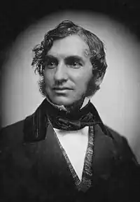
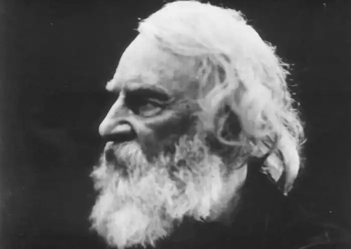

ГЕНРІ ВОДСВОРТ ЛОНГФЕЛЛО
(1807-1882)
Літературне життя Сполучених Штатів в епоху зрілого романтизму набуло жвавості, динаміки, розмаху, яких не знало раніше. Старше покоління романтиків іде не відійшло, а вже з'явились нові імена: Емерсон, Готорн, Торо, Лонгфелло, Лоуелл, Мелвілл, Уїтмен, По, Бічер-Стоу та десятки інших. Незмірно зросла кількість літературних журналів, що суттєво сприяло розвитку літератури в країні. Творчість Генрі Водсворта Лонгфелло, американського поета, пов'язана з пізнім етапом розвитку романтизму в літературі США. Він відомий читачеві як творець знаменитої "Пісні про Гайявату" (1855), у котрій було оспівано легендарного героя північноамериканських індіанців. Він створив також "Пісню про рабство" (1842), котра пролунала протестом проти становища негрів у Сполучених Штатах. Лонгфелло народився в родині адвоката, його готували до юридичної кар'єри. Але вже в коледжі він захопився вивченням нових європейських мов і поезією. Закінчивши курс у 1825 році, він здійснив подорож до Європи, де провів три роки. Юнак слухав лекції в Геттінгензькому університеті, відвідав Італію, Іспанію, Францію, Англію, Голландію, Швейцарію. Після повернення Лонгфелло почав викладати іноземні мови у тому ж коледжі, у котрому навчався. Близько двадцятьох років (1835— 1854) Лонгфелло був професором кафедри європейських мов Гарвардського університету, а після цього повністю присвятив себе літературній творчості. Коло його науково-літературних інтересів було досить широким і різноманітним. Він писав ліричні вірші, поеми, балади, подорожні нариси, складав поетичні антології, займався перекладами. У 1855 році Лонгфелло закінчив роботу над найвизначнішою працею свого життя "Піснею про Гайявату". Ця епічна поема створена на ґрунті пам'яток індіанського фольклору. Поет зібрав і опрацював пісні й легенди, котрі існували серед північноамериканських індіанців, і розповідали про життя, подвиги, боротьбу народного героя — легендарного богатиря Гайявати. Поет розповідає про його дивовижне народження та його величне життя в ім'я щастя свого народу, котрий прагне йти шляхом добра й правди. Гайявата — особа історична. Він жив у XV сторіччі, походив з племені ірокезів, потім став одним з вождів індіанського народу. У фольклорних оповідях Гайявата наділений рисами казкового героя. Тому і в інтерпретації Лонгфелло історія Гайявати стає поетичною легендою, чарівною казкою, у котрій фантастичний вимисел переплітається з народною мудрістю. Герой поеми — особа незвичайна: автор наділив його чудесною силою, незвичайним розумом і відвагою. Всі свої сили він віддає на благо свого народу — в цьому й полягає образ суто народного героя. Гайявата навчає індіанців необхідним речам у їхньому житті: майстерності полювання і землеробства, він винаходить писемність, відкриває таємниці лікарського мистецтва. Він вивчає таємниці природи, розуміє голоси звірів і птахів, уміє слухати шум вітру, дзюрчання річки. Поряд з цим у поемі відтворені прекрасні картини природи Північної Америки, змальовано побут індіанських племен, спосіб їхнього життя. З великою достовірністю змальовано одіж, зброю, прикраси, що дає змогу відтворити колорит індіанського життя, відчути правдоподібність. Образи героїв опоетизовані автором: це відважний і ніжний Чайбайабос, простодушний і сміливий Квазінд, струнка й гнучка Венона, прекрасна Нокоміс. Усі вони енергійні й відважні люди, котрі прагнуть до щастя і хочуть досягти його. У заключній частині поеми Гайявата закликає своїх співвітчизників жити у дружбі з білими й прислухатися до їх мудрих порад. Фінал пісні пронизаний настроями всепрощення. Перша половина 50-х років становить вершину в історії американського романтизму; романтичний рух зайняв три десятиріччя, а потім пережив смугу глибокого занепаду, залишивши нащадкам багатий художній і філософський спадок. ОСНОВНІ ТВОРИ: "Пісня про Гайявату", "Пісня про рабство".